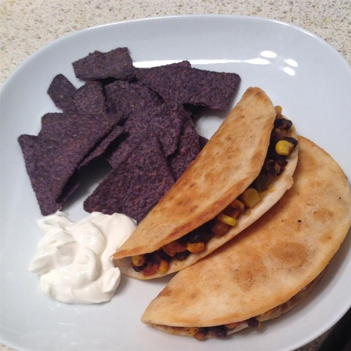
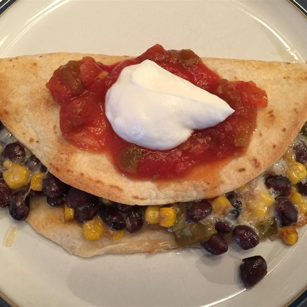

A wonderful and easy take on a classic snack
Ingredients needed
| Amount | Ingredients |
|---|---|
| 2 teaspoons | Olive oil |
| 3 tablespoons | Finely chopped onion |
| 1 15.5 ounce can | Black beans |
| 1 10 ounce can | Whole kernel corn |
| 1 tablespoon | Brown sugar |
| 1/4 cup | Salsa |
| 1/4 teaspoon | Red pepper flakes |
| 2 tablespoons | Butter |
| 8 8 inch | Flour tortillas |
| 1 1/2 cups | Shredded Montery Jack cheese |